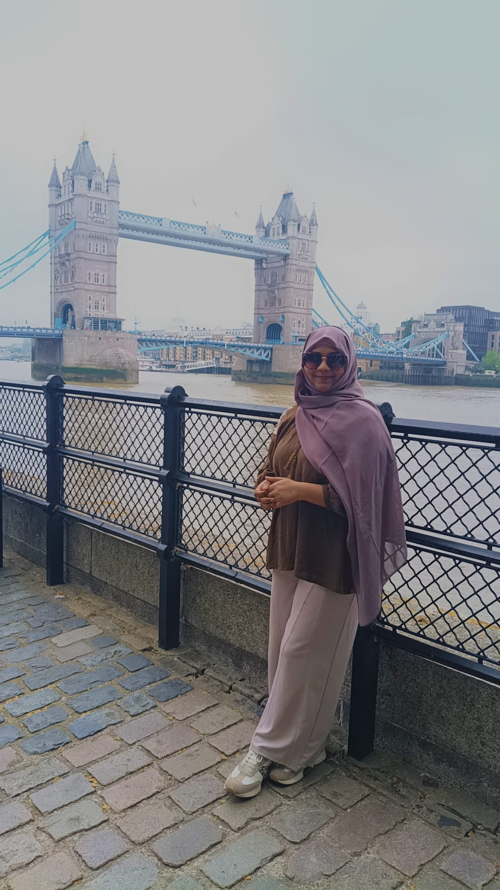
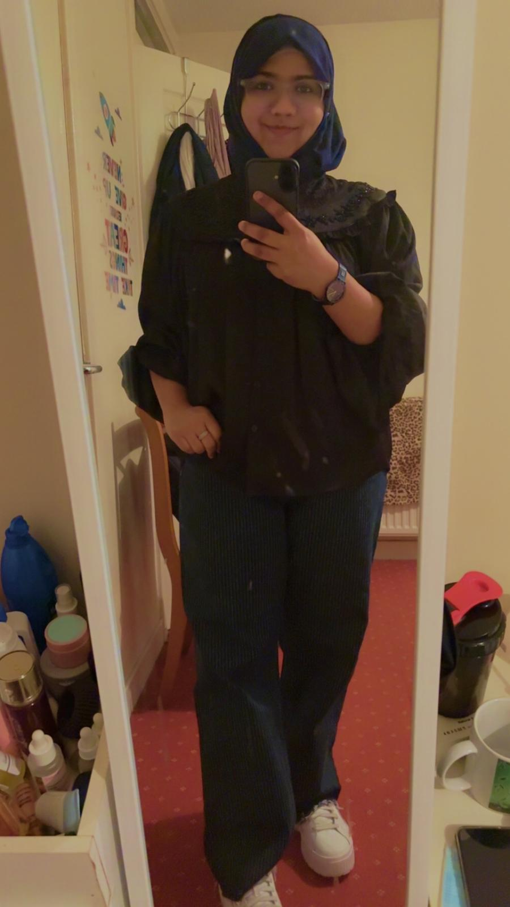
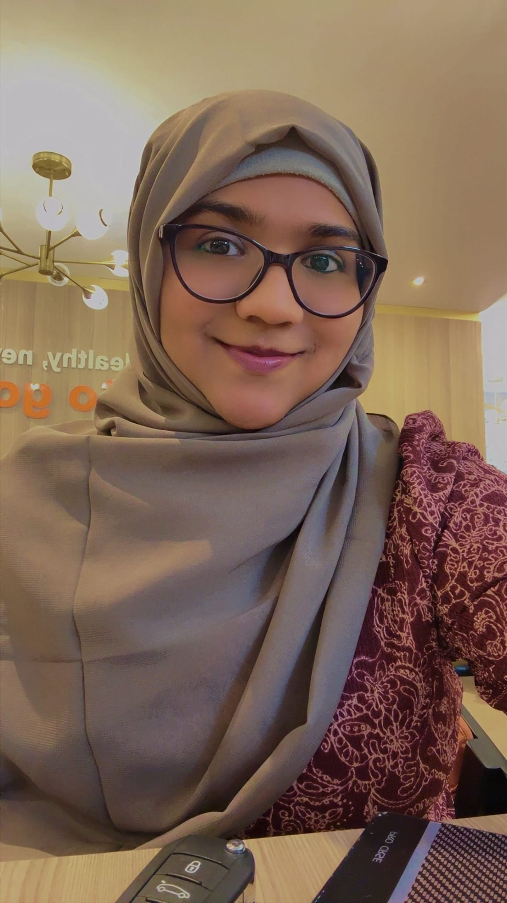

01
The Dua
Before us, there was only a quiet hope. A dua for someone honest, someone kind, someone who would not only walk beside you in dunya but remind you of Jannah too.
A beach-soft story of Duas, memories
This is the story of two people who started with salaam, laughed over race jokes, found comfort in little moments, faced a storm, and still do not want to give up.



One message. One reply. Then slowly, the little things became memories: Deen, Jannah, travelling, long drives, roza, iftar, family, work, cars, birthdays and the kind of jokes only two people understand.
Before us, there was only a quiet hope. A dua for someone honest, someone kind, someone who would not only walk beside you in dunya but remind you of Jannah too.
It started with one simple message: “Assalamualaikum.” No big speech. No perfect plan. Just two strangers opening a door that Allah may have already written for them.
You said you wanted a man whose priority is Islam: honest, loving, caring and respectful. I remember liking that because it made marriage feel bigger than just feelings. It felt like a journey towards Deen, peace and Jannah.
You were fun-loving, organised, adventurous, an adrenaline junkie. I was calm, soft-hearted, simple, and peaceful. Somehow, those differences did not feel like distance. They felt like balance.
Then came the driver jokes: who is better, who would win, who would survive the road trip, and whether Chaiwala comes before or after the race. A normal conversation became our private little comedy show.
You woke up at 4am with wide open eyes. I had sleep mode after midnight. Then came the special-list joke: you could call anytime. Even the 4am disturbing call became something sweet.
A call that was supposed to be simple became one hour of comfort. No pressure. No awkwardness. Just voices becoming familiar and two hearts learning each other slowly.
The funniest part was realising we were hardly ten minutes away. After apps, waiting, scrolling and searching, maybe what was meant for us was already nearby.
Pizza slices. Candle making. Work-from-home setup. Eid plans. Roza and iftar. Birthday talks. Car wash before Eid. These were not huge moments, but they became the details that made the story feel real.
These pictures are the first part of the story: smiles, places, little memories and soft moments. They are not just photos. They are proof that something beautiful once felt very close.
Then the story became harder. Misunderstandings came. Words hurt. Silence felt heavy. Maybe I made mistakes. Maybe you made mistakes too. Maybe we both became defensive when we should have become calm.
Neither of us is fully right. Neither of us is fully wrong. We are two imperfect people who cared enough to get hurt. And that is why this cannot be treated like nothing.
At least one of us has to pause, breathe, soften the voice and stop the other person from falling deeper into anger. Love cannot survive if both people only try to win. Sometimes love means one person says: “Come here, let’s fix this.”
The truth is simple: I am afraid to lose you. Maybe I made a dumb mistake. Maybe I did not handle things properly. But my heart does not want this story to end because of one difficult chapter.
Every beautiful story has a storm. The strong ones do not end there. They learn, forgive, communicate and start again with softer hearts.
So this is not goodbye. This is a pause. As sit down, listen, understand and choose each other again — not perfectly, but sincerely.
The first part of the story
Tap any picture to open it bigger.
From the heart
I know our start was beautiful. I know the last part became hard. But I also know that one conflict cannot erase every good thing. Maybe I made mistakes. Maybe we both did. But I still believe we can sit, calm down, listen properly and sort it out.
We should not fight each other. We should fight for the bond. If one person gets angry, the other should hold the moment gently and say, “Stop. We are not ending like this.”
This chapter is not the end. It is our chance to become softer, better and stronger.
May Allah guide what is best, protect what is sincere, and soften both hearts. Ameen.